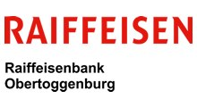
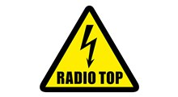
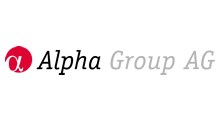
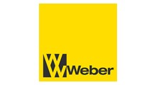
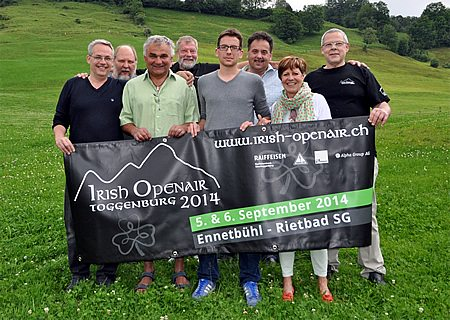

<ons-page class="center" ng-controller="ContactController">

    <ons-scroller>
        <section style="padding: 10px">

<h1 class="left">Sponsoren</h1>
<p class="fett">Das Irish Openair Toggenburg kann nur mit der Hilfe unserer Sponsoren durchgeführt werden. Herzlichen Dank für die wertvolle Unterstützung!</p>
	<ons-row style="margin-top: 10px;">
        <ons-col><a target="_blank" href="http://www.raiffeisen.ch/obertoggenburg"></a></ons-col>
        <ons-col><a target="_blank" href="http://www.toponline.ch/"></a></ons-col> 
   	</ons-row>
    <ons-row style="margin-top: 10px;">
        <ons-col><a target="_blank" href="http://www.algrp.ch/"></a></ons-col>
        <ons-col><a target="_blank" href="http://www.weber-wattwil.ch/"></a></ons-col> 
   	</ons-row>
    <p>Alle Sponsoren findest du unter <a href="http://www.irish-openair.ch/sponsoring.html" target="_blank">www.irish-openair.ch/sponsoring.html</a>.</p>
    <div class="hr"></div> 


	<ons-row>
        <ons-col>
        <h1 class="left">Organisationskomitee</h1>
        <p class="fett">Wir freuen uns auf deinen Besuch am Irish Openair Toggenburg</p>
		
        <p>Bruno Fumagalli, Max Kühni, Andreas Lieberherr, Peter Tanner, Ivan Louis, Hansjörg Huser, Pia Egloff und Heinz Habegger (v.l.n.r)</p>        
        </ons-col> 
   	</ons-row>
        </section>  
    </ons-scroller>

</ons-page>